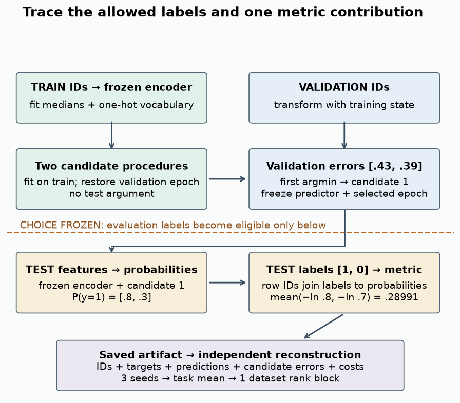

Comparison protocol reference

The invariant evidence chain¶
- Declare task versions, metric, rows, arms, seeds and candidate budgets.
- Fit preprocessing on training rows and fit/choose using train/validation only.
- Freeze candidate and epoch; score aligned test predictions afterward.
- Reconstruct metrics, reject incomplete declared panels, average seeds then rank datasets.
- Report paired raw effects with conditional intervals and costs with their timing scope.
- Keep random/temporal panels separate and compare regimes on the same underlying tasks.
Binary log loss uses P(y=1), validates [0,1] before float64-epsilon clipping. Regression RMSE remains in the released target's units; Sberbank is log(price_doc/full_sq). Three seeds are not three datasets. Nemenyi CD uses the entire declared method pool. Small-panel asymptotic Friedman p-values are exploratory; exact conditional temporal method-label permutation is supplied.
Five live operations¶
def validate_partitions(ids):— Accept exactly train, val and test, each a nonempty one-dimensional integer ID array; reject duplicates within and across parts. Return True.def choose_validation(errors):— Return the first index of the smallest finite loss in a nonempty one-dimensional sequence.def score_predictions(y,p,regression):— Require aligned finite nonempty vectors and a Boolean task flag. For regression compute RMSE. Otherwise validate labels in {0,1}, probabilities in [0,1], clip with float64 machine epsilon, and compute binary log loss.def aggregate_panel(records,datasets,arms,seeds):— Reject duplicate, missing or extra dataset/arm/seed keys against the explicit roster. Average errors over seeds first, then use average-tie rankdata. Return datasets, seeds, arms, details, mean_ranks, dataset_ranks, friedman_p, nemenyi_cd and uncertainty. Each detail includes dataset, arm, mean, sd, seed_values, conditional_t95 and seconds. SD and interval are None for one seed.def paired_effect(records,dataset,arm,baseline):— For one task and two distinct arms, require matching unique seed sets with at least two pairs. Return n, mean, sd, t95, differences and direction for arm minus baseline, sorted by seed.
Source and evidence boundary¶
The old 210-record run used incorrect historical TabM-mini. The v2 run uses corrected tabm_v2.py and new predictions, with full IDs, selection traces and dependency hashes. It remains a controlled numeric/one-hot small-recipe comparison. It omits CatBoost's native categorical route, TabM nonlinear embeddings, paper training budgets and nested benchmark protocols.
Corrected evidence · Permutation and paired analysis · Claim/source inventory · Exact regeneration and scale-up.
TabArena v1 §§2–3,A–D · TabReD v4 §5.4,C · TabM v3 §3,D · RealMLP v2 §3,A.2.
Checkpoint evidence chain¶
Question → row partitions → fitted recipe → validation choice → saved test predictions → reconstructed metrics → bounded conclusion.
| Resolution | Unit | Required interpretation |
|---|---|---|
| Row | Aligned target/probability pair | Correct class schema and metric contribution |
| Dataset | Seed-mean result on one task | Conditional variation and practical effect |
| Collection | One block per dataset per regime | Relative ranks with limited transfer evidence |
Three datasets × three seeds remain three task blocks. Keep random and temporal panels separate. Report failure coverage and cold/warm cost definitions with the selected baseline.